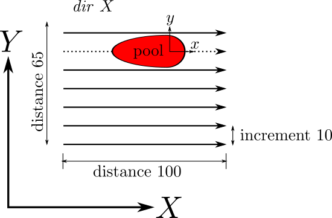

Syntax:
am_transverse_pass id distance D increment I
Examples:
am_pass 1 dir X distance 100.0 speed 10.0 am_transverse_pass 1 distance 65.0 increment 10
Description:
This command is used in the potts/additive application to specify the parameters of the transverse_pass subcomponent of a raster pattern. Multiple transverse passes can be defined in a single input file, using unique id values.
The distance value D key/value should typically be the box size transverse to the current pass direction.
The increment value I defines the transverse distance between passes defined in the pass command. It should typically be smaller than the molten zone width to achieve full coverage.
Note that the distance and increment values together implicitly define the number of passes when used to define a "rectangular_layer" via the am_cartesian_layer command.
In the above example, a pass along the X axis is defined. The transverse_pass command defines the distance increment 10 between each pass as well as implicitly defining the number of passes based upon the keyword/value pair distance 10.0. The schematic below illustrates this geometry.
Restrictions:
This command can only be used as part of the app_style potts/additive application.
Related commands:
am_pass, am_cartesian_layer, am_pattern
Default: none